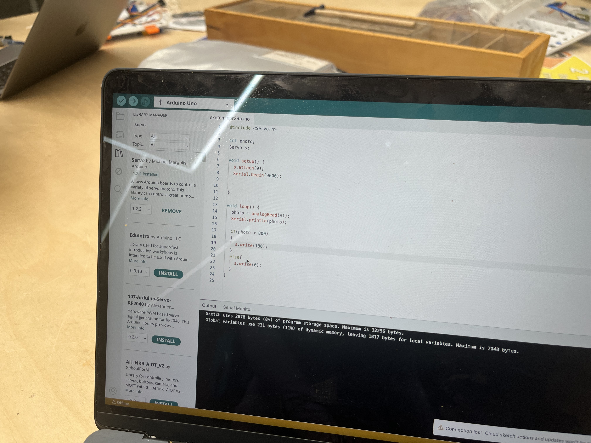
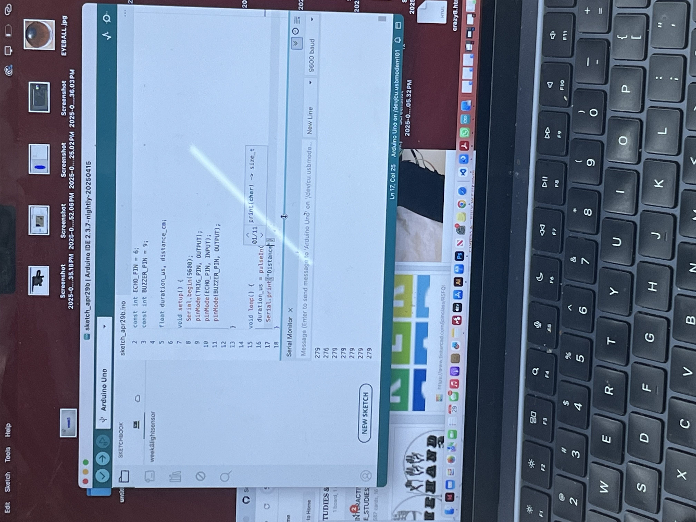

Lights Out, Numbers Up
Project: Fish Playground


For this project, we built a circuit using an Arduino board, a 10k resistor, a photoresistor, and a micro servo. The idea was to make the photoresistor r espond to changes in light—when the brightness dropped below a certain level (set in the code), the servo would rotate. It was cool seeing how the sensor translated light into motion. We tested it out by blocking the photoresistor with our fingers or shining a light directly on it, and watched the servo react in real-time. We also monitored the changing light values on the serial monitor.